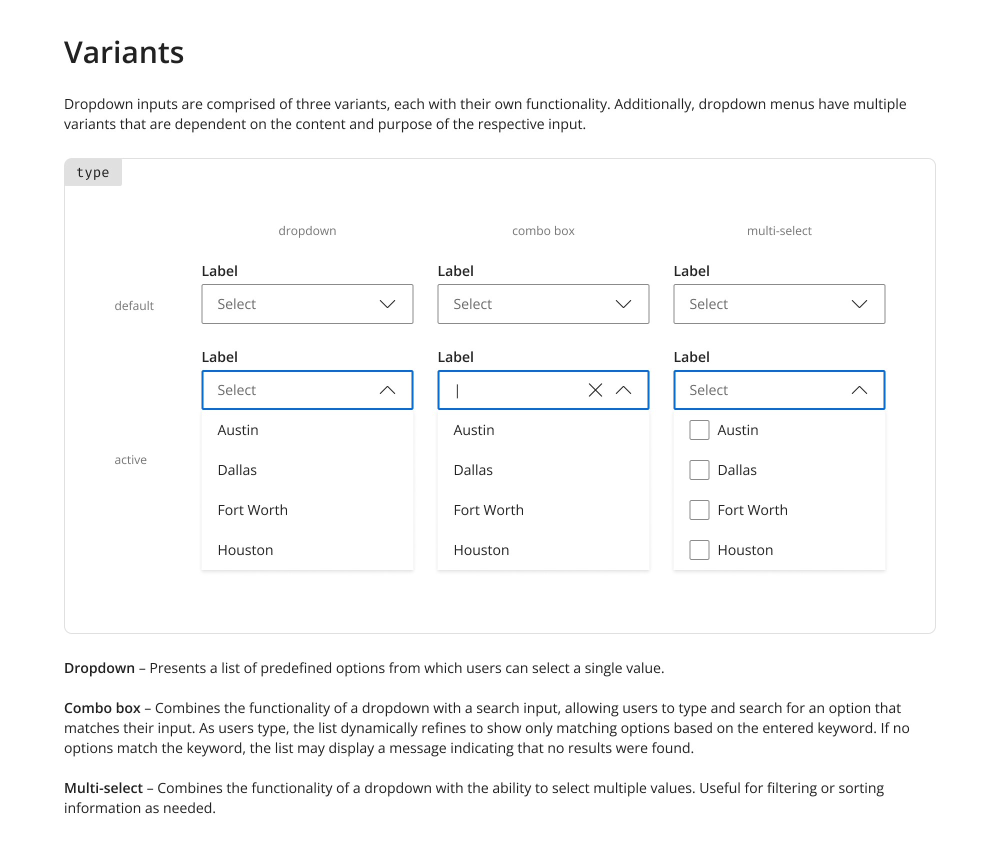
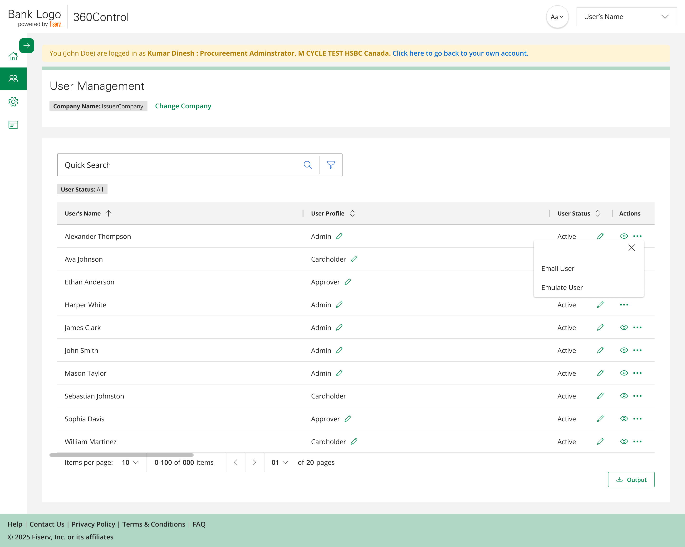
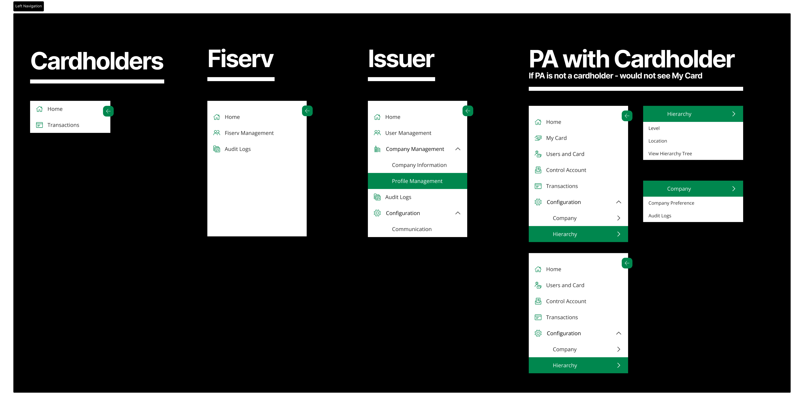
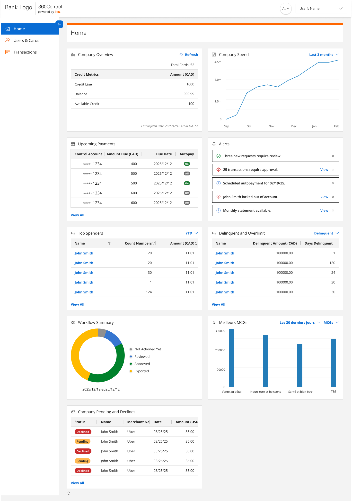
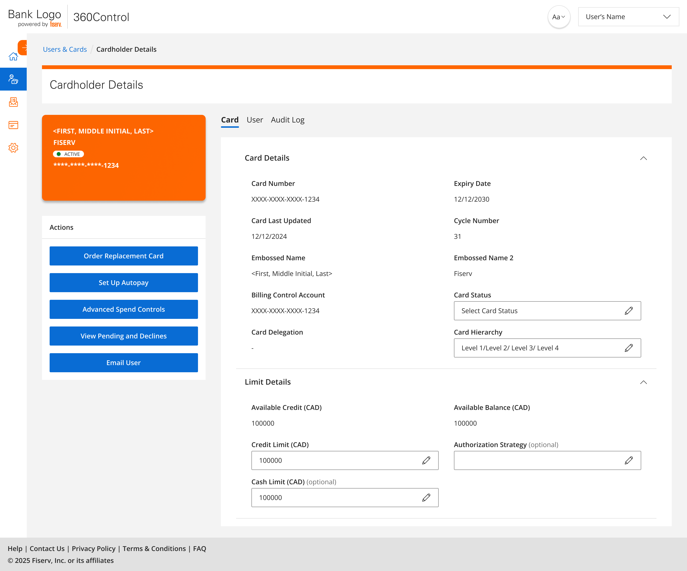
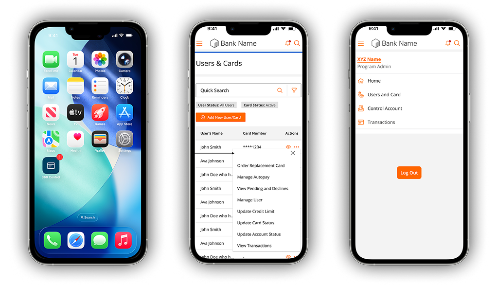
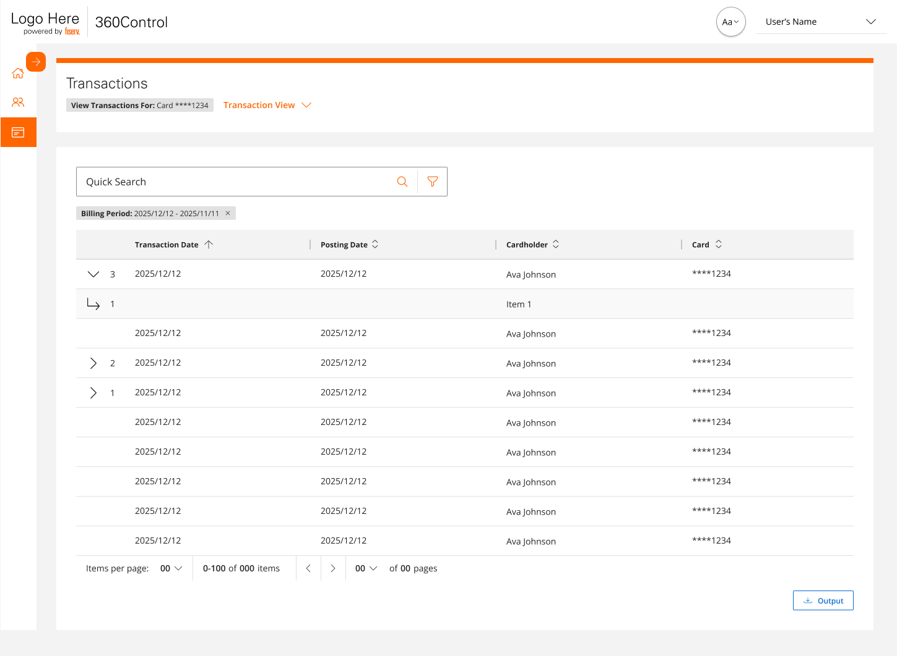

Context
A platform showing its age
By 2024, 360 Control carried the wear of years of incremental development by different teams: no shared UX language, desktop-only, and navigation organized around system features rather than user intent. Admins held a mental map of the system's architecture just to do their jobs.
Then Desjardins signed
Desjardins, one of Canada's largest financial cooperatives, came with specific requirements: bilingual Canadian French, custom data fields, a branded experience, mobile access, and one immovable constraint, a contractual conversion deadline in June 2026. The rewrite was no longer optional.
Consistency, mobile access, and a better experience for the admins and cardholders who spent hours in this system every day, delivered on a deadline that couldn't move.
Designer and product owner, at the same time
I was the UX designer and an embedded product owner simultaneously. That structure wasn't a formality, it changed how the whole project ran. Design intent wasn't handed off; it was built into every refinement session, every backlog call, every sprint.
There were moments when the right UX approach needed more time than the timeline allowed. In those moments the product owner in me had to make the call: scope it for Phase 1, protect the intent for Phase 2. Knowing when to defer UX ideals without losing them entirely was one of the harder skills this role demanded, and what made the dual structure work.
Shipping Phase 1 meant deliberately under-designing it
The right interaction model for program-hierarchy setup needed more time than the contractual deadline allowed. As the product-owner half of my role, I made the call: ship an honest, simpler Phase 1 and protect the fuller model for Phase 2, rather than half-build it under pressure. Deferring a good idea without quietly losing it was harder than designing it the first time.
The problem
The system made users think like engineers to do basic operations work.
Feature-based navigation
The IA reflected how the system was built, not how anyone used it. Completing a single task meant jumping between disconnected modules.
High-risk actions, no safety net
Updating a credit limit, replacing a card, changing permissions, actions with real financial consequences had no preview, no confirmation patterns, no undo.
No meaningful landing page
Admins navigated blind into deep menus with no context about which issuer they were managing or what had recently changed.
Audit by support ticket
A compliance officer wanting to know who changed a credit limit last quarter had to raise a support request and wait for a database lookup.
Research under constraints
Direct access to issuer administrators wasn't feasible, client-access constraints and timeline pressure made it a non-starter. So I used every input available and organized the work around one question:
"What does an issuer administrator actually do when the system makes this hard?"
In financial systems, predictable is trustworthy. Every inconsistent interaction pattern added risk for admins moving real money.
Configuration ≠ Operations. Keeping them separate in the IA removed the single biggest source of admin confusion.
On research constraints: stakeholder-driven research works, but it's not a substitute for watching real users. Validation happened through weekly stakeholder reviews, engineering refinement, and monthly CAT releases with real data.
The design system came before the screens
I built the design system before designing any product screen, working from Fiserv's Pixel design language as a foundation and extending it for everything 360 Control needed: foundation elements, data-dense grid patterns, form conventions, confirmation and safety patterns for high-risk actions.
The single highest-impact decision: a unified grid pattern, the same interaction model across Users, Cards, Transactions, and Audit Logs. It did more for platform cohesion than any visual design choice. Learn the grid once, and every section of the platform behaves the way you expect.


The solutions
One guiding principle behind all of them: users should be able to complete a task without jumping between sections. Everything needed to complete an action lives where that action lives.
A full platform rewrite versus one immovable contractual deadline to onboard the launch client. Design everything first and miss the date; rush screens and ship inconsistency.
Build the design system before any screen, then ship Phase 1 as launch-critical scope only. Foundation first bought the speed and consistency the deadline demanded.
The screens below are a slice. The rewrite reached across the platform, from sign-in to audit. I designed or restructured each of these surfaces on the same foundation, so the same patterns held end to end.
Intent-based information architecture
The key decision: explicitly separating configuration workflows (setup mode) from operational workflows (day-to-day mode). Admins know what kind of work they're doing before they touch a single feature. I restructured the whole platform into seven intent-based areas instead of backend modules.
It serves four roles, Issuer Admin, Fiserv Admin, Program Admin, and Cardholder, with role-based navigation and account emulation, so an admin can see exactly what another user sees before making a change.
Result: the IA redesign had more impact on usability than any visual decision on the project.


A landing page with actual context
The legacy platform dropped admins into deep menus blind. The new dashboard answers the first three questions of any session: which issuer am I managing, what changed recently, and what needs my attention now.
User & card management, end to end
The most heavily used part of the platform, redesigned as complete flows instead of disconnected modules. Add User and Add Card became wizard flows with manageable steps and consistent patterns, one admin tester described the new flow as something they "could finally teach in one sitting." When the bank's admins noted that cards are sometimes delegated to them, I added a dedicated "My Cards" space for program administrators managing both their own and delegated cards.
Result: single tasks no longer span multiple modules; new-admin onboarding became a teachable flow.
Spend controls you can preview
The legacy spend controls had hardcoded rules and no preview of impact before applying. The UX problem wasn't rule complexity, it was that the interface forced engineers' mental models on admins. I consolidated everything into one focused task flow: progressive disclosure for advanced options, and a clear distinction between defining a rule and seeing its impact.
Result: CAT issues on Advanced Spend Controls were medium-severity observations, not blockers, baseline usability held even at full complexity. The feature drew interest from other banking clients previewing the platform.

Audit logs in the UI, not in a ticket queue
A comprehensive Business Audit Log built directly into the interface, accessible at company level, card level, and user level, filterable by action type, date range, and actor. No more backend lookups for a question the UI should answer.
Result: The bank's security team could immediately see the oversight required for regulatory compliance. Audit visibility became a client trust signal, not a compliance checkbox.
Mobile: a requirement, not an afterthought
Mobile was a launch-client requirement from day one. I introduced it after core desktop flows stabilized, a deliberate sequencing decision to avoid compounding complexity during the IA redesign. The unified patterns made the translation systematic rather than bespoke.

AutoPay, theming, and what's queued next
Integrated with Users, Cards, and a new Billing Control Accounts view, configure autopay for one card or an entire account.
Custom brand theme and full French translation support, designed into the system rather than bolted on.
The transactions grid redesigned as a query-and-reporting surface, with dispute integration queued for a later phase.
Why 360 Control has no AI, on purpose
Everything in 360 Control is strategy-driven: human-defined authorization strategies, configurable spend-control logic, one-to-many rule application, real-time deterministic enforcement. Every outcome traces to a specific rule that a specific administrator defined. These are not AI inferences, they're explicit business rules the system executes predictably.
Knowing when to use AI and when to deliberately avoid it is the more mature design skill. 360 Control isn't limited by the absence of AI, it's made more trustworthy by it. This contrasts directly with my work on Disputes Workspace, where AI assistance was designed around visible reasoning, confidence labels, and human override. Two different domains, two different answers, one principle: the technology serves the trust model, never the other way around.
Compare: where I did use AI → Disputes WorkspaceValidated in production-like conditions
Rather than designing everything upfront and launching once, we used CAT environments for incremental, limited-scope releases. Each monthly drop validated designs with real data and realistic workflows, design assumptions met reality every four weeks, not once at the end.
Monthly CAT releases with real data; weekly stakeholder reviews; design refinement embedded in every engineering sprint, roughly 5 to 7 stories a session with around 10 engineers, and I was in the room for it.
Advanced Spend Controls, the platform's most complex feature, produced only medium-severity observations in CAT. The baseline held.
Other banking clients previewing the platform before full launch expressed interest, the redesign became a sales asset.
Two ways to set a first password, tested head to head
First-time card access could either hand the cardholder a system-generated password or let them set their own. I ran an A/B test on the two onboarding flows, measured on whether the cardholder completed first card access. The variant that let cardholders set their own password won, and it shipped to production.
Impact
Meeting the contractual obligation to onboard the launch client on schedule was the primary business outcome. Phase 1 delivered it.
The 360 Control design system is becoming the foundation for a unified design language across Fiserv's Issuer Solutions division.
Built-in audit visibility turned a compliance requirement into a client trust signal during the bank's security review.

Learnings
360 Control isn't a flashy consumer product. It's a complex enterprise system where UX mistakes have real financial and regulatory consequences, and that context made every decision matter more.
Structure matters more than surface
The IA redesign from feature-based to intent-based navigation had more impact on usability than any visual decision. Get the structure right first, separate config from operations, then refine the surface.
Being embedded in delivery beats handoffs every time
Owning refinement meant design intent was built into every sprint rather than translated (and diluted) through documents.
Restraint is a design skill
Choosing deterministic rules over AI, phasing scope without losing intent, sequencing mobile after desktop, the hard calls were about what not to do yet.
What I'd do differently
Think about mobile constraints earlier
Sequencing mobile after desktop was intentional, but considering its constraints during desktop design would have made the translation smoother.
Watch a few real admins
Stakeholder-driven research worked, but observing even a few real issuer admins would have validated assumptions and uncovered edge cases earlier.